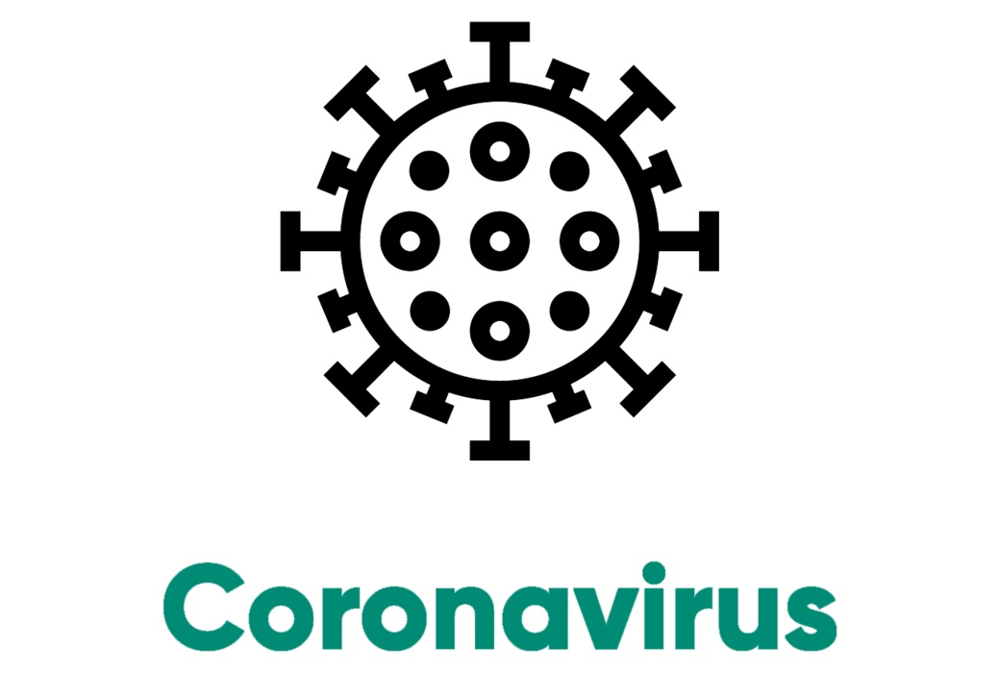

Mon Parcours
- Nom : Antoine POURCEL
- Fonction : Analyste SOC
- Age : 25 ans
- Résidence : Nogent-sur-Marne
Ayant développé une passion pour l’informatique depuis mon plus jeune âge, j’ai un intérêt tout particulier pour la Sécurité des Systèmes d’Information, secteur dans lequel je souhaite avoir une expérience significative. Afin de pouvoir accompagner des organisation, privées ou publiques, dans la sécurisation de leurs infrastructures et dans la prévention des risques cyber, je souhaiterai m'orienter à terme sur de la gouvernance et du consulting dans ce domaine.
Mes Formations
-
EFREI
Licence 2015-2017Suivi de deux années de licences du cycle prépa de l'EFREI
-
EPSI
BTS et Bachelor 2017-2020Suivi de la formation Bachelor de l'EPSI pour l'obtention d'une double certification BAC+3 ainsi que d'un BTS SIO.
-
ESGI
Master 2020-2022Formation en apprentissage pour l'obtention d'un Master avec spécilaité Sécurité Informatique
Mes Diplômes
BTS
Juillet 2019Ministère en charge de l'enseignement supérieur et de la recherche
Certification professionelle
Aôut 2020IPI Institut Poly Informatique.
Administrateur(trice) systèmes, réseaux et bases de données
ID RNCP : 12112
Bachelor
Octobre 2020EPSI
SCOR 1.0
Octobre 2020CISCO
ID de la certification : 154334
Mon Expérience
-
MB 3.0
Stage Développeur Juillet 2018 Paris XIXèmeDéveloppement d'une plateforme de gestion utilisée pour gérer les commandes du site internet de Mr. Bricolage. Développement de la plateforme avec PHP/Symfony 4.
-
Ministère des Armées
Apprentissage Management des systèmes d'informations 2019-2020 Rambouillet, YvelinesHomologation de systèmes d'information liés à des projets d'innovation menés par un centre inter-armées. Vérification de l'application des exigences de sécurité du Ministère.
-
AISI
Apprentissage Administrateur cybersécurité Depuis 2020 Saint-Mandé, Val-de-MarneDétection de menaces sur des systèmes d'informations d'entreprises clientes, tests d'intrusions, ingénierie inverse de maliciels, réponse à incident et rédaction de propositions afin d'assainir les parcs informatiques clients. Au delà de ça, développement d'outils internes en Python.
Mes Projets
-
 Voir le projet
Voir le projet
Root-Me
Apprentissage autodidacte de la cybersécurité avec la plateforme Root-Me. Cette plateforme fonctionne avec un système de défi que chaque participant doit relever un à un dans plusieurs domaines qu'il s'agisse de programmation, de forensic, de cryptographie ou d'intrusion. Root-Me permet donc de connaitre un large panel de faille.
-
 Voir le projet
Voir le projet
MOOC de l'ANSSI
Afin d'être averti des risques de sécurité auqels font face les entreprises et les institutions nationales, L'Agence Nationale de la Sécurité des Systèmes d'Informations (ANSSI) à mis en place un cours en ligne sur les bonnes pratiques à adopter sur les outils informatiques en matière de sécurité. Je suis en train de suivre ce cours afin d'obtenir le certificat qui est accordé à la fin de cette formation.
-
-
